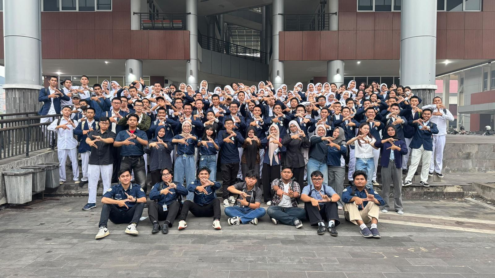
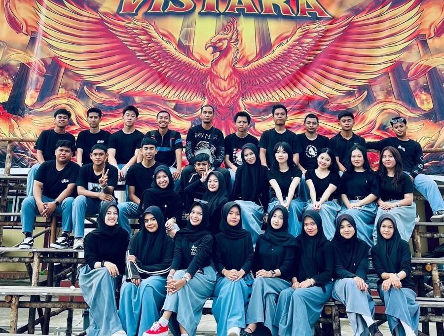
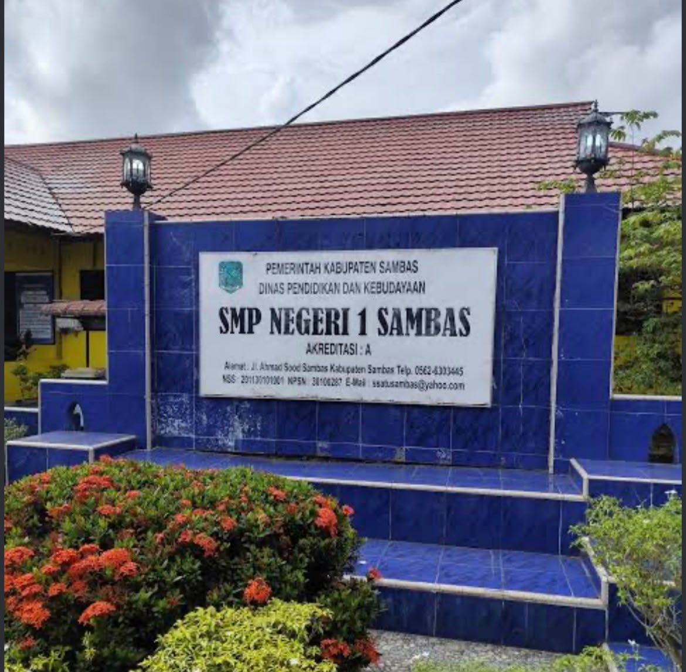
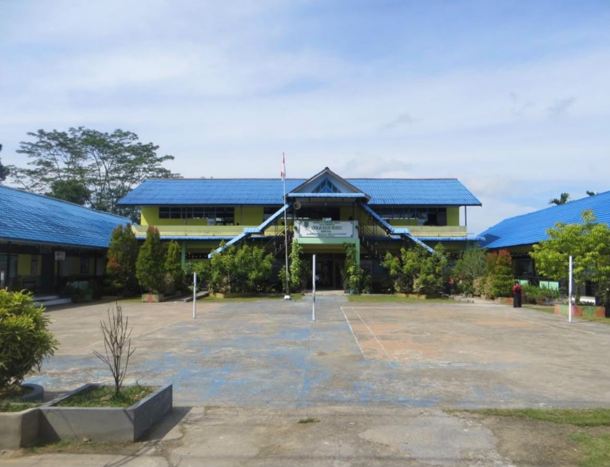

Muhammad Arfa Satriandi
BRAND NEW PROGRAM
Selamat datang di portal pahlawan digital! Saya adalah mahasiswa Sistem Informasi Universitas Tanjungpura Pontianak dengan fokus keahlian pada Analisis Sistem, Pemrograman Web, dan UI/UX Design.
TENTANG SAYA

Mahasiswa Sistem Informasi FMIPA UNTAN
Muhammad Arfa Satriandi adalah mahasiswa aktif Program Studi Sistem Informasi di Fakultas Matematika dan Ilmu Pengetahuan Alam (FMIPA), Universitas Tanjungpura. Memiliki dedikasi tinggi dalam memecahkan masalah kompleks melalui perancangan arsitektur sistem, pengelolaan basis data, dan pengembangan web yang intuitif.
Terinspirasi oleh semangat Spider-Man — "With great power comes great responsibility" — saya berkomitmen untuk menciptakan solusi digital yang dapat diandalkan dan memberikan manfaat nyata bagi masyarakat serta organisasi.
BIODATA DIRI
Informasi pribadi lengkap, latar belakang akademis, hobi, dan minat
Informasi Personal Detail
Mahasiswa AktifSelalu bersemangat untuk mempelajari teknologi terkini dan mengimplementasikannya dalam proyek nyata.
RIWAYAT PENDIDIKAN
Jejak langkah pendidikan dari Sekolah Dasar hingga Perguruan Tinggi

S1 Sistem Informasi
Universitas Tanjungpura (UNTAN) - FMIPA
Fokus pada pemrograman web, analisis dan perancangan sistem informasi, manajemen basis data, serta tata kelola teknologi informasi.

SMA Negeri 1 Sambas
Jurusan IPA / MIPA
Aktif dalam pelajaran sains terapan, logika matematika, serta pengembangan awal pemikiran analitis.

SMP Negeri 1 Sambas
Pendidikan Menengah Pertama
Mengembangkan fondasi akademik, kerja sama tim, serta dasar ilmu pengetahuan umum.

SD Negeri 1 Mentawa Sambas
Pendidikan Sekolah Dasar
Awal perjalanan dalam membangun literasi, karakter, dan minat membaca.
SOSIAL MEDIA & KONTAK
Klik logo di bawah ini untuk terhubung langsung secara instan